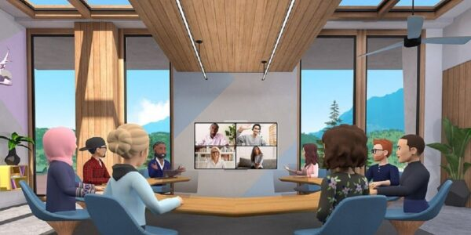
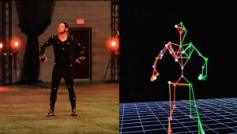
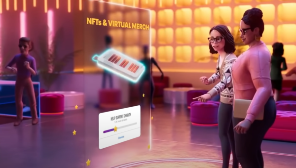

On 2022-01-19
It was announced during the Keynote (Conference by Marc Zuckerberg) on October 28, 2021 that the Facebook Inc. group (formed of the Facebook, Instagram and WhatsApp applications) will now be called Meta. Moreover, Mark Zuckerberg (CEO of Facebook) announced that he was setting up something huge, the "Metavers".
What is the "Metaverse"?
Facebook has had monstrous success with its social network, which connects people to each other on the Internet, in the same “universe”, we are talking about billions of users. The metaverse (for meta-universe) is an entirely virtual world, a future version of the Internet in which it would be possible to “live”. Companies such as Meta or Microsoft are therefore very interested in this project because it is the future of social connections, where social networks would no longer be simple web pages but a whole virtual universe, in 3D. In which it would be possible to play, work, play sports, walk, rest or even chat with other people modeled by avatars.
This idea of a virtual universe is not new, since it has been exploited many times in the cinema, in particular with the film "Ready Player One" released in 2018. We can imagine that we will be able to move and perform movements thanks to motion capture (with accessories such as the virtual reality headset already very widespread, especially in video games, or augmented reality glasses which would be more pleasant to wear , but also treadmills for infinite movements, as well as sensory combinations to capture and measure all the movements of the body).


The Meta group already plans to integrate the Facebook Marketplace to have a real virtual business. This would allow for example to buy clothes for our avatar or sell objects. Moreover, the increasing evolution of NFT (Non-Fungible Token) may create a new economic system connected to reality.
The interest of this project is undeniable insofar as it leaves room for a lot of imagination. Some people will project themselves into this virtual universe as if in a dream where they can give free rein to their imagination. However, this idea is very controversial for some who think that social networks already cut us off too much from reality, and that the development of a completely virtual universe, as real as it may seem, can only be harmful for the male.
Sources :